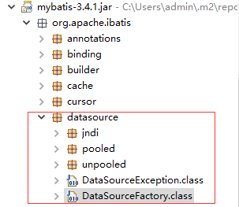

场景
使用三张数据表：
student学生表teacher教师表position职位表
一个学生可以有多为老师、一位老师可以有多个学生、但是一个老师只能有一个职位：教授、副教授、讲师；但是一个职位可以有多个老师：例如教授可以多人
这里则产生了：
- 一对一关系，从老师角度：老师对职位一对一
- 一对多关系，从职位角度：职位对老师一对多
- 多对多关系：查找被教授教导的所有学生（首先职位对老师一对多，老师再对学生再对多、这里便有了一对多对多）
数据表 .sql 如下：
老师表：
1 | CREATE TABLE `tb_teacher` ( |
学生表：
1 | CREATE TABLE `tb_student` ( |
职位表：
1 | CREATE TABLE `tb_position` ( |
最后是教师学生关系表：
1 | CREATE TABLE `tb_stu_teach` ( |
在 eclipse 中的目录结构如下：

sqlMapConfig 该如何配置，以及 jdbc.properties 和 log4j 的作用，请自行百度。
POJO 中的三个实体
注意：以下的 POJO 都用了 lombok 来快速生成 setter 和 getter 等， lomok 具体使用，请自行百度。
Position.java
1 | package com.pojo; |
Student.java
1 | package com.pojo; |
Teacher.java
1 | package com.pojo; |
注意：关系表不用以实体表示出来，表示外键关系的 ID 也不用写在实体中（一般我们也不使用外键）
再贴另一个 MybatisUtil.java 工具类
1 | package com.util; |
一对一：老师对职位
TeacherMapper.xml
1 |
|
TeacherMapper.java 接口
1 | package com.mapper; |
测试一对一：
1 | package com.test; |
一对多：职位对老师
PositionMapper.xml
1 |
|
TeacherMapper.java 接口
1 | package com.mapper; |
测试一对多：
1 | package com.test; |
多对多：查找被教授教导的所有学生
一对多对多：只要你愿意可以一直对多下去…
PositionMapper.xml
1 |
|
PositionMapper.java 接口
1 | package com.mapper; |
测试：
1 | package com.test; |
If you like this blog or find it useful for you, you are welcome to comment on it. You are also welcome to share this blog, so that more people can participate in it. If the images used in the blog infringe your copyright, please contact the author to delete them. Thank you !